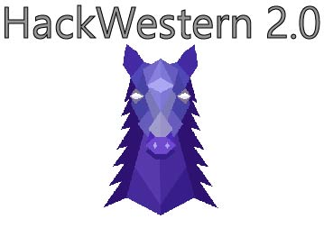

Projects
These are some things that I have been working on. If you have any questions, or want to know about them more, please contact me!



I am a first year student at University of Waterloo, studying Systems Design Engineering.
I like to learn and try new things.
Personality wise, I'm pretty funny I guess. I like to make lames jokes/puns and laugh at myself.
I know Python and C++, and have done couple of projects with them
Have experience with team management and also a great teamworker
I am comfortable with Adobe Photosop and Adobe Illustrator
I am currently self-teaching HTML5, CSS3, and Javascript
I like to believe that I am a generalist. I am proficient in coding languages such as Python and C++.
I have some experience with Adobe Creative Suite and Office Suite as well.
I also have fantastic communication skills, thrive in a team environment, learn quickly, and results driven.
This is a part where I get to brag about my extensive work experience!
I gained many valuable skills and lessons from these jobs.
Engineering Science Quest, University of Waterloo / January 2016 - May 2016
I worked with youths from grade 1- 12.
Developed activities for a STEM-themed March Break camp according to Ontario Science Curriculum, and ran it
Taught Python to over 80 Grade 10 girls for Code Squad conference
Reviewed and delivered workshops around the KW area, promoting STEM to elementary schoolers.
YMCA of Oakville / June 2015 - September 2015
Here, I worked with children ages 4-6 over the summer with focus on YMCA's core values: Caring, Health, Honesty, Inclusiveness, Respect, and Responsibility. I acted as a positive role model for them.
I programmed and facilitated creative and educaitonal games and crafts for campers to enjoy, based on their interests and age group.
I collaborated with my coworkers to ensure that each day ran smoothly, often assisting each other during time of need - such as covering for their campers when needed
I honed my skill of decision making and conflict management by listening to the children and balancing conflicting interests
Also communicated with parents directly to ensure they knew what was going on at camp each week! If they had any concerns(which they almost never had), I dealt with them directly in a respectful manner.
Master Seong's Tae Kwon Do World / September 2014 - June 2015
My main responsibility was to organize and carry out lessons for students age varying from tots to adults.
I ensured the safety of everyone involved during sparring by paying close attention during the activity
Big Brothers Big Sisters / September 2012 - May 2015
I worked with Big Brothers and Big Sisters to assist newcomers to Canada assimilate better into the new culture and society.St.Ignatius of Loyola Student Council / June 2014 - June 2015
Oh boy! I was the elected Vice President for the 2014/15 term for my highschool.St.Ignatius of Loyola Swim, Track & Field, and XC team/ June 2013 - June 2015
I played sports all throuhout highschool and put a lot of effort and practice into them.These are some things that I have been working on. If you have any questions, or want to know about them more, please contact me!
You can contact me here
{kind=link}